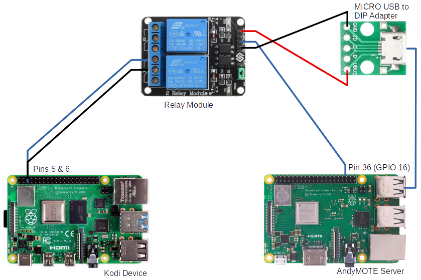

MQTT allows AndyMOTE to publish it's current activity state to other systems (for example Home Assistant). Andymote requires that the AndyMOTE Server has a MQTT Broker such as Mosquitto installed.
With the AndyMOTE Server properly configured, AndyMOTE will publish the current activity state to the the AndyMOTE Server MQTT Broker. For example if AndyMOTE has an Activity called Watch BluRay and this is activated; AndyMOTE will publish status of andymote = Watch BluRay to the MQTT Broker. If no activities are running then the published status will be set to Off.
This application note describes the use of MQTT to switch on a Raspberry Pi when AndyMOTE publishes it's current activity as andymote = Watch Kodi to the MQTT Broker.
The Circuit Diagram shows the hardware setup for this application. The AndyMOTE Server provides power to a Relay Module via a Micro USB to DIP Adapter and controls the operation of Relay 1 (on the Relay Module) through pin 36 (GPIO 16). Relay 2 is unused.
The Relay 1, normally open (NO) contacts, are connected to Pins 5 & 6 of the Kodi Device (eg RaspberryPi 4). Pins 5 & 6 of a Raspberry Pi, when connected together, cause the device to switch on.

Circuit Diagram
create the file /lib/systemd/system/mqttRelay.service with content as shown below:
To enable the service: